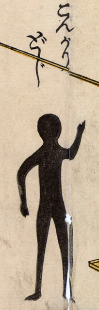

こんがり童子；コンガリドウジ，子供；コドモ，火事；カジ

真っ黒な人影。火災で焼け死んだ子供と考えられる。こんがりどうじの名前は不動明王の脇士矜羯羅童子をもじっている。
出典：親書誌：U426_nichibunken_0177：（地震院火事落涙山非常明王開扉木札；ジシンインカジラクルイサンヒジョウミョウオウカイヒモクサツ）／日付：2010／資源識別子：U426_nichibunken_0177_0002_0000
Copyright (c)2010- International Research Center for Japanese Studies, Kyoto, Japan. All rights reserved.